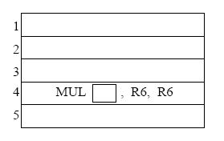
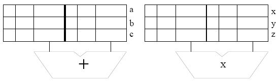

As mentioned in class, the finite state machine has some race conditions. Identify the race conditions and show what simple modifications can be made to eliminate them.
Assume four devices, having priorities 1, 2, 3, and 4 respectively. Their respective controllers request the bus via asserting BR1, BR2, BR3, and BR4 respectively. Priority 4 is the highest priority.
- Show the interconnections required for distributed arbitration for the four devices and their controllers connected to the bus. Be sure to label each signal line and designate by arrows whether the signals are input or output with respect to the device.
- Is it possible for starvation to occur in this configuration? Describe the situation where this can occur.
- Assume each I/O Controller is implemented using a clocked finite state machine. Draw a Moore model state machine for the controller operating at priority level 2. Label each state clearly. Label all necesary inputs and outputs. You do not need to show the clock signal on the state machine diagram. State transitions are synchronized to the clock.
MUL R3, R1, R2 ADD R5, R4, R3 ADD R6, R4, R1 MUL R7, R8, R9 ADD R4, R3, R7 MUL R10, R5, R6Note: Each instruction is specified with the destination register first.
Calculate the number of cycles it takes to execute the given code on the following models:
- A non-pipelined machine.
- A pipelined machine with scoreboarding and five adders and five multipliers.
- A pipelined machine with scoreboarding and one adder and one multiplier.
Note: For all machine models, use the basic instruction cycle as follows:Fetch (one clock cycle)
Decode (one clock cycle)
Execute (MUL takes 6, ADD takes 4 clock cycles)
Write-back (one clock cycle)
Do not forget to list any assumptions you make about the pipeline structure (e.g., data forwarding between pipeline stages).
DOIT STW R1, R6, #0
ADD R6, R6, #1
AND R3, R1, R2
BRz EVEN
ADD R1, R1, #3
ADD R5, R5, #-1
BRp DOIT
EVEN ADD R1, R1, #1
ADD R7, R7, #-1
BRp DOIT
Assume that before the loop starts, the registers have the following decimal values stored in them:
R0: 0
R1: 0
R2: 1
R3: 0
R4: 0
R5: 5
R6: 4000
R7: 5
Fetch-stage takes 1 cycle, Decode-stage takes 1 cycle, Execute-stage takes
variable number of cycles depending on the type of instruction (see below),
and Store-stage takes 1 cycle.
All execution units (including the load/store unit) are fully pipelined and
the following instructions that use these units take the indicated number of
cycles:
STW: 3
ADD: 3
AND: 2
BR : 1
- Data forwarding is used wherever possible. Instructions that are dependent on the previous instructions can make use of the results produced right after the previous instruction finishes the Execute-stage.
- The target instruction after a branch can be fetched when the
BR instruction is in ST stage.
For example, the execution of an ADD instruction followed by a BR would look
like:
ADD F | D | E1 | E2 | E3 | ST BR F | D | - | - | E1 | ST TARGET F | D
- The pipeline implements "in-order execution". A scoreboarding scheme is used as discussed in class.
Answer the following questions:
- How many cycles does the above loop take to execute if no branch prediction is used?
- How many cycles does the above loop take to execute if all branches are predicted with 100% accuracy.
- How many cycles does the above loop take to execute if a static BTFN (backward taken-forward not taken) branch prediction scheme is used to predict branch directions? What is the overall branch prediction accuracy? What is the prediction accuracy for each branch?
The register file before and after the sequence are shown below (tags for ``After'' are ignored).

-
Complete the five instruction sequence in program order in the space below.
Note that we have helped you by giving you the opcode and two source operand
addresses for instruction 4. (The program sequence is unique.)
 - In cycle 1 instruction 1 is fetched. In cycle 2,
instruction 1 is decoded and instruction 2 is fetched. In cycle 3,
instruction 1 starts execution, instruction 2 is decoded, and
instruction 3 is fetched.
Assume the reservation stations are all initially empty. Put each instruction into the next available reservation station. For example, the first ADD goes into ``a''. The first MUL goes into ``x''. Instructions remain in the reservation stations until they are completed. Show the state of the reservation stations at the end of cycle 8.Note: To make it easier for the grader, when allocating source registers to reservation stations, please always have the higher numbered register be assigned to SR2.
 - Show the state of the Register Alias Table (V, tag, Value) at the end of
cycle 8.